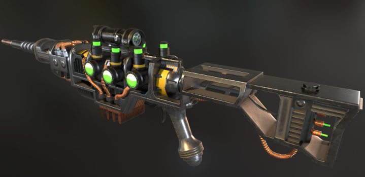

este site é destinado aos membros do enclave de mais alto rank
caso não seja um soldado de alto rank, vista sua power armor e caia fora!
o propósito desse site é fornecer informações sobre tudo que sabemos nesse ermo sombrio
A CONQUISTA DA LUA
Publicado por um soldado do Enclave no portal oficial de notícias. Após anos de preparação e desenvolvimento tecnológico, é com enorme orgulho que anunciamos a chegada das forças do Enclave à superfície lunar. Nossa expedição foi concluída com sucesso, estabelecendo o primeiro posto avançado do Enclave fora da Terra. A operação representa um marco histórico para nossa organização e demonstra que, mesmo após a Grande Guerra, nossa capacidade tecnológica permanece muito à frente de qualquer outra força conhecida. As equipes de engenharia já iniciaram os trabalhos para a construção de uma instalação permanente, que servirá como centro de pesquisa, observação e operações estratégicas. A Lua representa uma nova oportunidade para expandirmos nossa influência, desenvolvermos novas tecnologias e garantirmos a sobrevivência da humanidade sob a liderança do Enclave. Enquanto os habitantes da Terra lutam para sobreviver entre ruínas, nós estamos construindo o futuro. O futuro é nosso. O futuro é do Enclave.
X-01 Power Armor
A X-01 representa um dos maiores avanços tecnológicos já desenvolvidos pela indústria militar americana. Projetada para oferecer proteção superior, mobilidade e eficiência em combate, essa armadura é um símbolo da superioridade tecnológica do Enclave. Desenvolvida nos últimos anos antes da Grande Guerra, a X-01 serviu como base para futuras pesquisas e aprimoramentos realizados por nossos engenheiros. Seu design avançado, estrutura reforçada e sistemas de suporte permitem que o usuário opere em ambientes extremamente hostis, incluindo regiões contaminadas pela radiação. Atualmente, nossos especialistas continuam estudando maneiras de aperfeiçoar seu desempenho, garantindo que essa tecnologia permaneça a serviço dos interesses do Enclave. Enquanto outras organizações dependem de equipamentos improvisados e tecnologias ultrapassadas, nós continuamos trabalhando com o legado científico da antiga América. A X-01 não é apenas uma armadura. É uma demonstração daquilo que a humanidade pode alcançar sob a liderança do Enclave.
Frank Horrigan
É com grande satisfação que apresentamos Frank Horrigan, um dos mais importantes integrantes das forças especiais do Enclave. Horrigan representa o resultado de anos de pesquisas e investimentos em aprimoramento militar. Equipado com uma versão especialmente modificada de uma Power Armor, ele possui características físicas extraordinárias e capacidade operacional muito acima dos soldados convencionais. Sua presença em campo é um importante recurso estratégico para nossas operações, sendo frequentemente designado para missões de grande importância para a segurança e os interesses do Enclave. Pouco se sabe sobre os detalhes de seu treinamento e de sua trajetória, mas sua dedicação e lealdade à organização são amplamente reconhecidas entre nossos oficiais. Enquanto muitos dependem de equipamentos para cumprir suas funções, Frank Horrigan é a demonstração de até onde a tecnologia e a ciência do Enclave podem chegar. O Enclave continua avançando. E homens como Horrigan garantem que nosso futuro esteja em boas mãos.
EQUIPAMENTO DE ELITE: RIFLE DE PLASMA ENCLAVE

Desenvolvido com tecnologia pré-guerra aprimorada pelos cientistas do Enclave, o Rifle de Plasma dispara projéteis de matéria superaquecida a temperaturas extremas. Capaz de perfurar e desintegrar alvos pesadamente blindados em segundos, é a arma padrão que garante a superioridade tática das nossas forças no ermo.